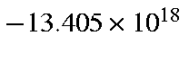
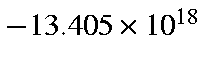

At R(N-N) = 1.094 Å,
G = -44.877 kcal/mol/Å or
 erg/cm. Therefore acceleration,
erg/cm. Therefore acceleration,
 cm/sec/sec, or
 cm/s2, which is
cm/sec/sec, or
 cm/s2, which is
 Earth surface gravity.
Earth surface gravity.
Distance from equilibrium = 0.00980 Å. After 0.1 fs, velocity is
 cm/sec or 1340.5 cm/s.
cm/sec or 1340.5 cm/s.
In the DRC the time-interval between points calculated is a complicated
function of the curvature of the local surface. By default, the first
time-interval is 0.105fs, so the calculated velocity at this time should be
 cm/s, in the DRC calculation the predicted
velocity is 1407.6 cm/s.
cm/s, in the DRC calculation the predicted
velocity is 1407.6 cm/s.
The option is provided to allow sampling of the system at constant time-intervals, the default being 0.1 fs. For the first few points the calculated velocities are given in Table 1.
As the calculated velocity is a fourth-order polynomial of the acceleration, and the acceleration, its first, second and third derivatives, are all changing, the predicted velocity rapidly becomes a poor guide to future velocities.
For simple harmonic motion the velocity at any time is given by:
| Calculated | Simple Harmonic | Diff. | |
| Time | Velocity | 25325.Sin(0.5296t) | |
| 0.000 | 0.0 | 0.0 | 0.0 |
| 0.100 | 1340.6 | 1340.6 | 0.0 |
| 0.200 | 2678.0 | 2677.4 | +0.6 |
| 0.300 | 4007.0 | 4006.7 | +0.3 |
| 0.400 | 5325.3 | 5324.8 | +0.5 |
| 0.500 | 6628.4 | 6628.0 | +0.4 |
| 0.600 | 7912.7 | 7912.5 | 0.0 |
The repeat-time required for this motion is 11.86 fs, in good agreement with the three values calculated using static models. The repeat time should not be calculated from the time required to go from a minimum to a maximum and then back to a minimum--only half a cycle. For all real systems the potential energy is a skewed parabola, so that the potential energy slopes are different for both sides; a compression (as in this case) normally leads to a higher force-constant, and shorter apparent repeat time (as in this case). Only the addition of the two half-cycles is meaningful.